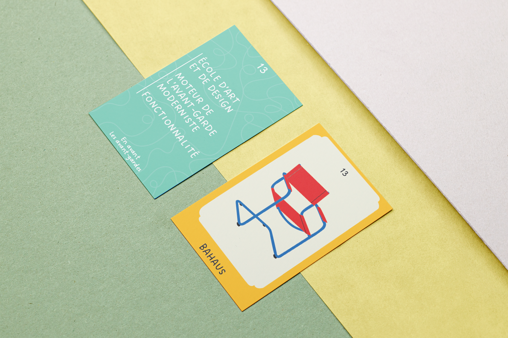
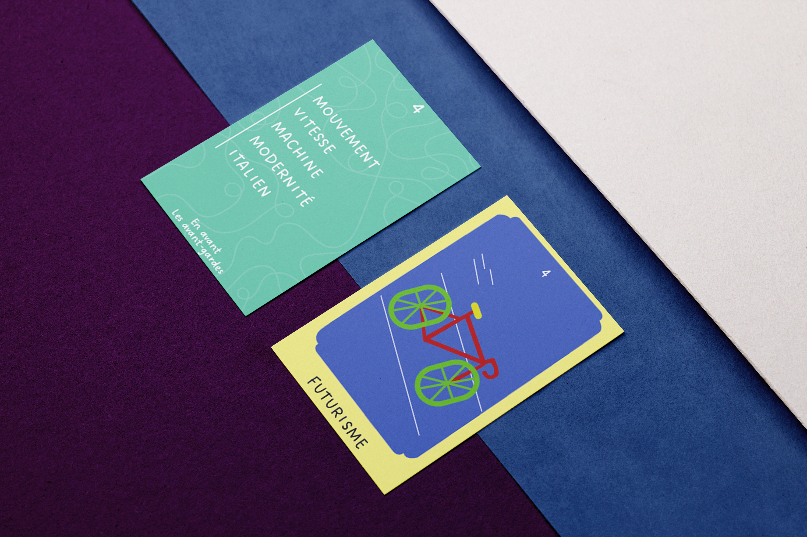
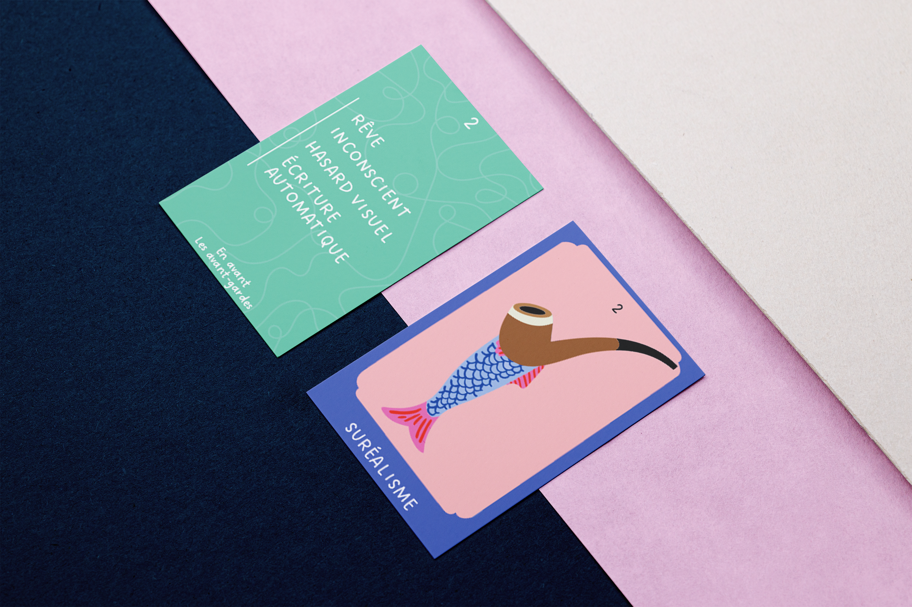
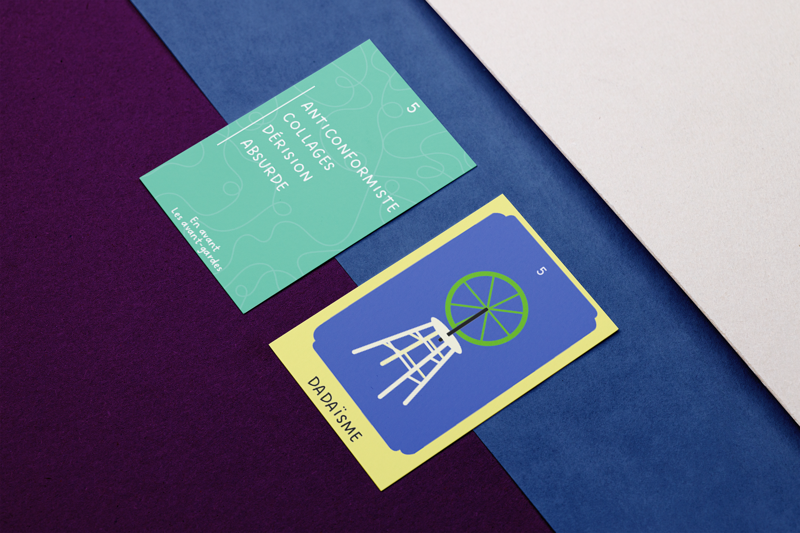
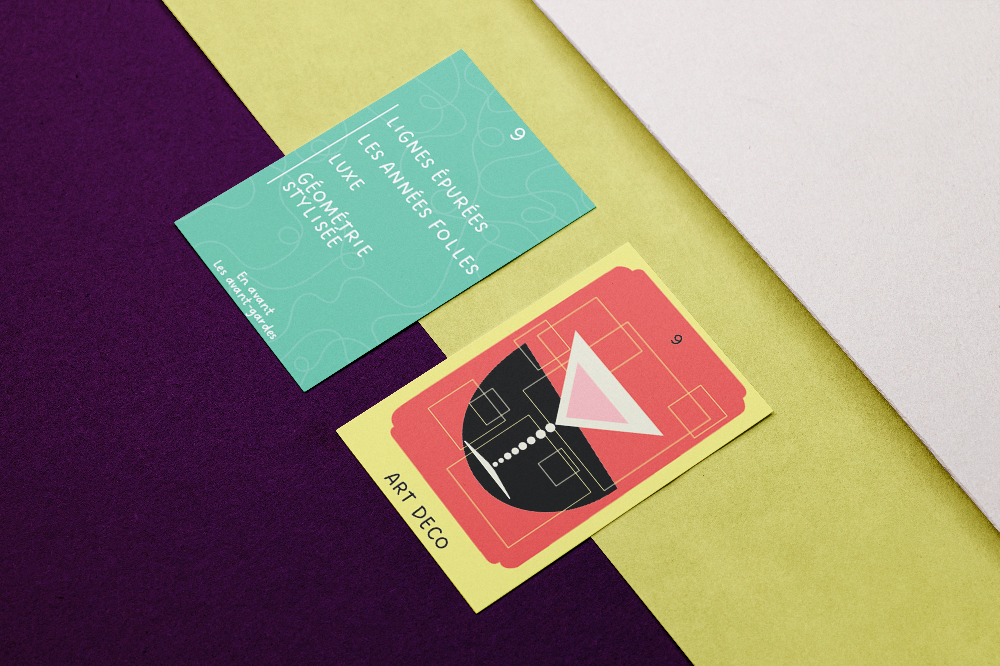

J’ai réalisé un jeu de cartes de type mémo consacré aux mouvements artistiques et aux artistes entre 1900 et 1970 environ. Il se compose de 15 cartes « Mouvement », avec au recto une illustration évoquant le courant artistique et au verso des mots-clés permettant de l’identifier, ainsi que de 15 cartes « Artiste », présentant au recto une œuvre célèbre et au verso un indice pour rattacher l’artiste à son mouvement.



